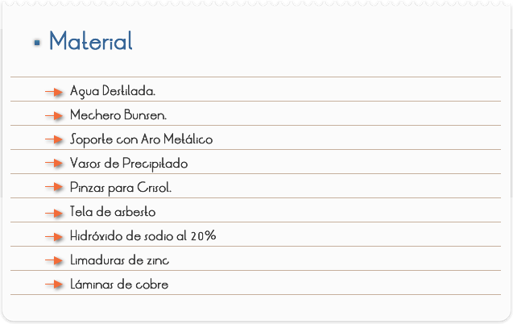

Introducción
Muchos de los metales que conocemos no son puros son aleaciones, una aleación es una disolución sólida que se prepara disolviendo un metal en otro, generalmente cuando ambos están en estado líquido. La aleación tiene propiedades físico-químicas diferentes de las propiedades originales. Por ejemplo, el oro puro (denominado de 24 quilates) es demasiado blando para usarlo en joyería. Para hacerlo más fuerte se alea con cobre y plata, lo que en una porción de 25% da lugar a una aleación conocida como oro de 18 quilates.
Artículos metálicos como: el peltre es una aleación (87% Sn, 7.3% Cu, 6% Bi, 1.75% Sb.) muy empleada en utensilios de cocina. El latón (67%Cu, 33% Zn) se utiliza en la fabricación de diversos artículos de ferretería. Las hojas de rasurar tienen aleaciones de Cr-Pt. Los audífonos de los equipos de música emplean un imán permanente de Co-Sn. Las aleaciones de mercurio se llaman amalgamas. Las de plata y Zinc son muy utilizadas por los dentistas para rellenar las cavidades dentales. El mercurio, que solo es muy venenoso, cuando se encuentra en esta amalgama no presenta mayor riesgo para la salud.
Objetivo
Modificar las propiedades del metal de las monedas de cobre calentándolas con Zinc (Zn) en una disolución de hidróxido de sodio (NaOH), se puede utilizar láminas de cobre o tubo en lugar de monedas.

1. Utiliza tres láminas de cobre de un mismo tamaño de una lámina entera.
2. ¿Cómo los podrás convertir en oro?
3. Prepara un soporte con una pinza de anillo y una tela de alambre
4. Coloca un vaso de precipitado de 100 ml sobre la tela de alambre
5. Pesa 0.5 g de limaduras o lámina delgada de Zinc, colócala en el vaso de precipitado.
6. Con precaución vierte 15 ml de disolución de hidróxido de sodio al 20 % en el vaso y cubre esté con un vidrio de reloj. La disolución de hidróxido de sodio es muy cáustica: daña la piel. Si llegara a caer sobre tu piel, lava de inmediato con agua fría de la llave, da aviso a tu profesor.
7. Calienta el vaso suavemente en el mechero hasta que la disolución comience a burbujear.
8. Enseguida reduce la llama del mechero para mantener un burbujeo moderado.
9. PRECAUCION: Evita la inhalación del vapor que sale del vaso. No permitas que la disolución hierva vigorosamente o que evapore a sequedad.
Usa pinzas de crisol o tenazas para agregar con cuidado dos láminas de cobre, tubos de cobre o monedas a la disolución caliente de hidróxido de sodio. No dejes caer las láminas en la disolución; evita salpicar.
10. Separa la tercera lámina como control, es decir, como muestra no tratada que puede compararse con las láminas tratadas.
11. Observa y anota cualquier cambio en la apariencia de las láminas. Continúa hasta que ya no observes más cambios.
12. Llena 2 vasos de precipitado con 250 ml de agua destilada.
13. Con pinzas de crisol o tenazas retira las 2 láminas de la disolución. Coloca ambas en un vaso de agua destilada. Retira la llama del vaso con hidróxido de sodio pero no deseches la solución.
14. Usa pinzas de crisol o tenazas para retirar las laminas del vaso con agua. Enjuágalas bajo el agua de la llave y sécalas con cuidado con una toalla de papel, separa una de las láminas para comparación posterior.
15. Calienta por un momento la otra lámina tratada y seca en el cono exterior de la llama del mechero sosteniéndola en forma vertical con las pinzas de crisol o las tenazas, calienta la lamina solo hasta que observes un cambio, lo que tomara unos segundos. No calientes demás.
16. De inmediato sumerge la lámina en el segundo vaso de agua destilada. Anota tus observaciones.
17. Retira la lámina del vaso de agua. Sécala con cuidado con una toalla de papel.
Observa la apariencia de las 3 láminas. Anota tus observaciones.
Al terminar desecha la disolución de hidróxido de sodio y el Zinc ya usado, sigue las indicaciones de tu profesor. Puedes realizar una reacción de este tipo con varios materiales metálicos
18. Lava tus manos perfectamente al terminar la práctica.
1. Lámina de cobre sin tratamiento.
2. Lámina de cobre tratada con Zn + NaOH.
3. Lámina de cobre tratada con Zn + NaOH y calentada con la flama del mechero
4. Compara los colores de las tres láminas (sin tratamiento, calentándolo solo en la disolución de hidróxido de sodio y en la llama del mechero).
5. ¿Te recuerda otros metales la apariencia de las láminas tratadas? De ser así explica.
6. Si alguien te dijera hiciste oro en esta actividad ¿cómo podrías decir que es verdad?
7. ¿Se te ocurren usos prácticos para los cambios metálicos que observaste en esta actividad?
8. ¿Qué le sucedió a los átomos de cobre presentes originalmente en las láminas tratadas?
9. ¿Crees que podrás convertir de nuevo las láminas tratadas en cobre normal?